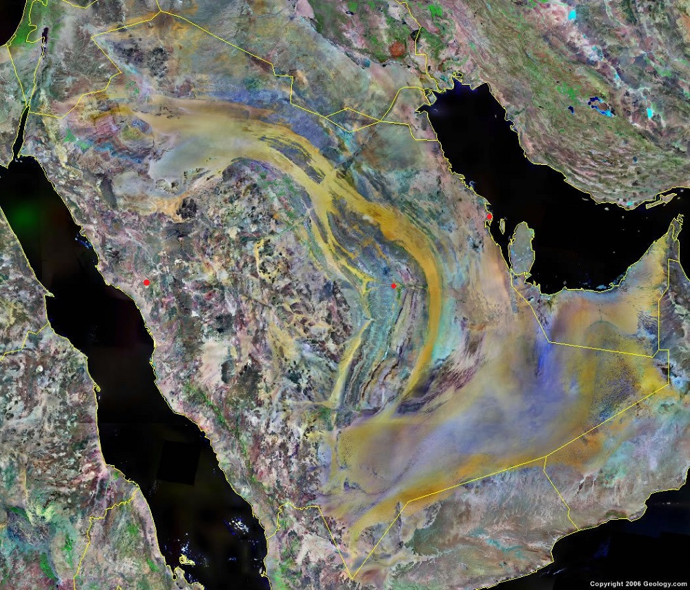
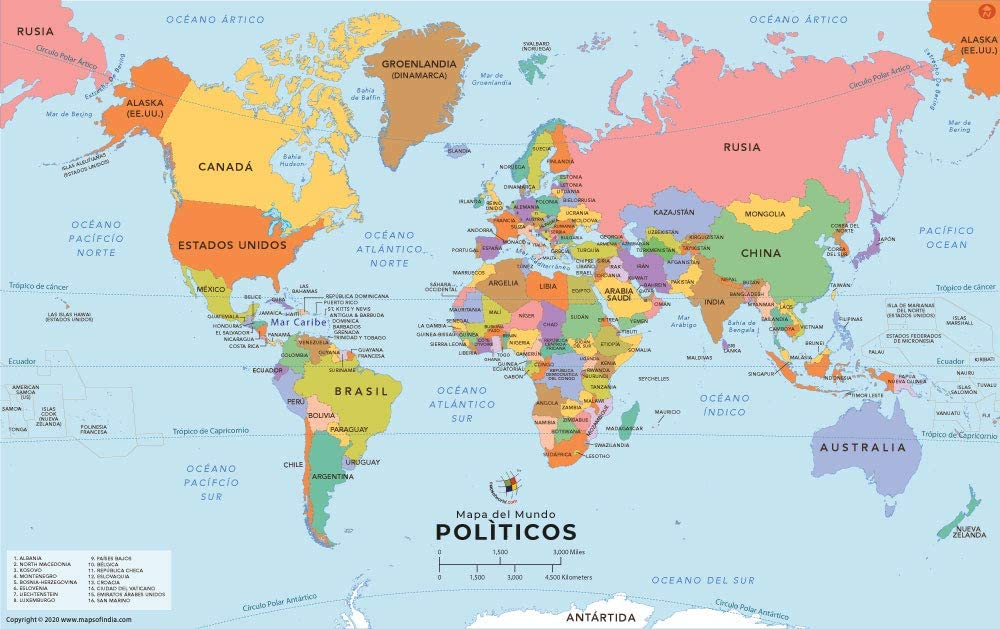

Saudi Arabia Information: saudi Arabia is located in the Middle East.
Saudi Arabia is bordered by the Red Sea to the west.
Ymen and Oman to the south.
the Persian Gulf, Qatar and United Arab Emirates to the east,
and Kuwait, Iraq, and Jordan to the north.
Explore Saudi Arabia Using Google Earth:
Google Earth is a free program from Google that allows you
to explore satellite images showing the cities and landscapes
of Saudi Arabia and all of Asia in fantastic detail.
It works on your desktop computer, tablet, or moblie phone.
The images in many areas are detailed enough that you can see
houses, vehicles and even people on a city street. Google Earth
is free and easy-to-use.

Saudi Arabia on a World Wall Map:
Saudi Arabia is one of nearly 200 countries
illustrated on our Blue Ocean Laminated Map of the World. This map
shows a combination of political and physical features. it includes
country boundaries, major cities, major mountains in shaded relief,
ocean depth in blue color gradient, along with many other features.
This is a great map for students, schools, offices and anywhere that
a nice map of the world is needed for education, display or decor.
Saudi Arabia On a Large Wall Map of Asia:
If you are interested in Saudi Arabia and the
geography of Asia our large laminated map of Asia might be just what you
need. It is a large political map of Asia that also shows many of the
continent's physical features in color of shaded relief. Major lakes,
rivers, cities, roads, country boundaries, coastlines and surrounding
islands are all shown on the map.